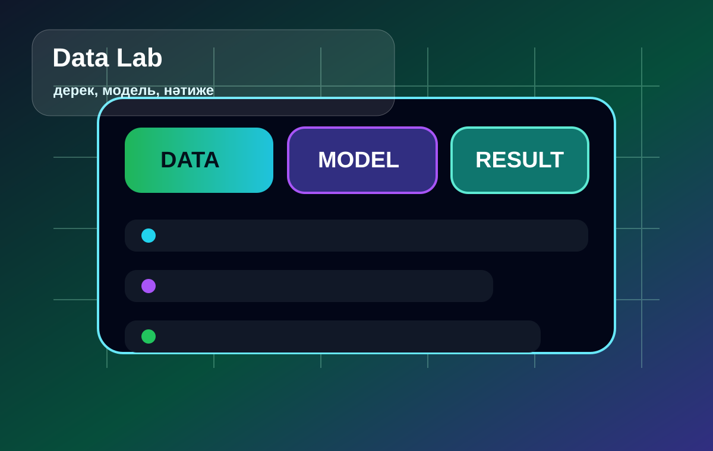

Neural Network
Деректерді өңдеп, байланыстарды анықтайтын модель көрінісі.
Бұл бетте AI тақырыбына арналған галерея, аудио, бейне және қолдану мысалдары орналасқан.
Сайтта кемінде үш сурет болуы тиіс деген талап осы бөлімде орындалды.
Деректерді өңдеп, байланыстарды анықтайтын модель көрінісі.

Сұрақтарға жауап беретін және тапсырма орындауға көмектесетін цифрлық көмекші.

Дерек, модель және нәтиже арасындағы технологиялық процесс.
Аудио және видео файлдар сайттың ішінде орналасқан, сондықтан GitHub Pages арқылы ашылады.
Қысқа синтезделген аудиофайл.
Жасанды интеллект желісін көрсететін қысқа бейнеролик.
Жасанды интеллект әртүрлі салада көмекші құрал ретінде қолданылады.
AI оқушыға жаңа тақырыпты түсіндіреді, жоспар құрады және мысалдар ұсынады.
Кестелерді талдауға, мәтін дайындауға және клиент сұрағын өңдеуге көмектеседі.
Мәтін, дизайн идеясы, сценарий және визуал концепция жасауға қолданылады.
Кесте құру, жоспарлау, аудару және ақпарат іздеуді жеңілдетеді.